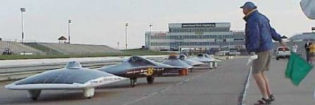
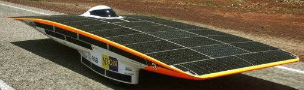
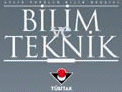
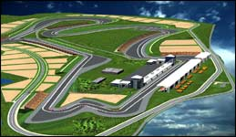

|
TÜBÝTAK,
gençleri dünyada yükselen yeni teknolojinin Türkiye'de geliþtirilmesinde
aktif rol almaya teþvik amacýyla, Ödüllü Güneþ Arabalarý Yarýþý
Formula G'yi düzenliyor. Ekiplerin kendi geliþtirecekleri
güneþ enerjili arabalarýn katýlacaðý bu yarýþýn 30 Aðustos
2005 Salý günü Ýstanbul'da Formula yarýþlarýnýn yapýlacaðý
5.3 kilometrelik pistte yapýlmasý planlanýyor. Bu yarýþ ayrýca,
F1 pistinde düzenlenen ilk güneþ arabalarý yarýþý olma özelliðini
de taþýyor.
Yeni
ürün geliþtirme, tasarým ve imalat konusunda ekip çalýþmasý
gerektiren bu yarýþmanýn üniversite öðrencileri, öðretim üyeleri
ve sanayiden profesyoneller arasýndaki iþbirliðini geliþtirmeye
önemli katkýlarý olacaktýr. Yarýþmaya hazýrlanan birçok ekip
tasarým ve modelleme için üç boyutlu CAD yazýlýmlarýndan,
mukavemet, rüzgar direnci vs. gibi hesaplama ve analizler
için ise çeþitli CAE yazýlýmlarýndan faydalanýyor.
Yurt
dýþýnda yapýlan benzeri yarýþmalarda birçok büyük ve tanýnmýþ
teknoloji ve mühendislik firmalarý gerek maddi gerekse yazýlým
ve donaným desteði ile sponsorluk yapmaktadýr. Yarýþmaya hazýrlanan
ekipler genellikle Türkiye'de bu yarýþmanýn gördüðü ilginin
gereðinden az olduðunu dile getirmekte ve onbinlerce YTL'sýna
mal olacak bu araçlarýn hayata geçirilebilmesi için daha çok
firmanýn sponsor olarak kendilerine destek olmalarýný istemektedirler.
|

|
|
|
Yukarýda, geçmiþ yýllarda yurt dýþýnda yapýlmýþ güneþ
arabasý yarýþlarýna ait bazý fotoðraflar görülmektedir.
Araçlarýn üzerinde sponsorluk yapan birçok firmanýn
logosu bulunmaktadýr.
|
|

|
Þimdiye
kadar en iyi performansý sergileyen araç, Hollanda'daki
Delft Üniversitesi'nin ESA (European Space Agency) sponsorluðunda
yaptýðý Nuna II isimli güneþ arabasýdýr. Hýzý saatte
170 km'yi bulabilen bu araç, 3000 km'lik mesafeyi ortalama
70 km/saat hýzla kat edebiliyor... Nuna II hakkýnda
daha fazla bilgi için: www.nuna2.com
|
TÜBÝTAK
Bilim ve Teknik Dergisi'nin düzenlediði Güneþ Arabalarý Yarýþý'nýn
amacý, Türkiye'yi 21. Yüzyýl'da olmasý gereken yere taþýyacak
öncü gençlere zorlu bir hedef koymak. Konuya
iliþkin sorularý yanýtlayan Bilim ve Teknik Dergisi Genel
Yayýn Yönetmeni Raþit
Gürdilek, yarýþmaya üniversiteli gençlerin beklenenin
de üzerinde ilgi gösterdiðini, öðrencilere çok sayýda akademisyenin
de yardýmcý olduðunu belirtti.
Gürdilek,
üniversiteli gençlerin yarýþmaya katýlacak araçlarýn tasarýmý
üzerinde çalýþtýklarýný belirtti. Gürdilek, yarýþmanýn kurallarýnýn
belirlenmesi ve araçlarýn tasarým ve performansýnýn denetlenmesi
amacýyla TÜBÝTAK'ta konunun uzmanlarýndan oluþan bir jürinin
de oluþturulduðunu söyledi.
Güneþ
enerjisi kullanýlarak ileri teknoloji ürünlerin oluþturulmasýnýn
Türkiye açýsýndan büyük yararlar saðlayacaðýný vurgulayan
Gürdilek, yarýþma sayesinde Türkiye'de güneþ enerjisi alanýnda
çalýþan araþtýrmacýlarýn potansiyelinin ortaya çýkabileceðini
bildirdi. Gürdilek, yarýþma için TÜBÝTAK'ýn da 50 bin Euro
kaynak ayýrdýðýný kaydetti.
TÜBÝTAK
Bilim ve Teknik Dergisi'nde yer alan duyuruda, 'Güneþ Arabalarý
Yarýþý - Formula G'ye katýlacak ekipler kendi geliþtirecekleri
güneþ enerjili arabalarla 100 kilometrelik bir pistte yarýþacak.
Gürdilek, para ödüllü yarýþta hedefin, "Gençleri, teknoloji
üreten Türkiye vizyonunu gerçekleþtirmek için giriþecekleri
zorlu sýnavlara, büyük iddialara þimdiden hazýrlamak" olduðunu
söyledi.
Gürdilek,
'Cumhuriyet'in 100. yýlýnda teknoloji ihraç eden Türkiye'
vizyonu için gençler kadar sanayicilerin ve iþadamlarýnýn
da sorumluluðu bulunduðunu hatýrlatarak, baþta otomotiv ve
elektronik sektörü olmak üzere bu enerjiden fayda görecek
herkesi, yarýþmaya katýlacak takýmlarý desteklemeye, sponsor
olmaya çaðýrdý.
Formula
G Türkiye Güneþ Arabalarý Yarýþý, Ýstanbul-Tuzla Formula-1
Yarýþ Pistinde yapýlacak. Pistin tamamlanmasý için çalýþmalar
hýzla sürdürülmektedir.
Aþaðýdaki
tabloda yarýþa katýlan takýmlar ve sponsorlarý ile ilgili
bilgi bulunmaktadýr:
Daha
Fazla bilgi için:
www.biltek.tubitak.gov.tr/formulag/giris.htm
> TÜBÝTAK FORMULA G ÖDÜLLÜ GÜNEÞ ARABALARI YARIÞI
Formula G koordinatörü: Bülent Gözcelioðlu, E-Posta:
bulent.gozcelioglu@tubitak.gov.tr
|